연습 문제는 다 통과했는데, 왜 떨어졌을까?
AI_TOP_100 예선 탈락썰
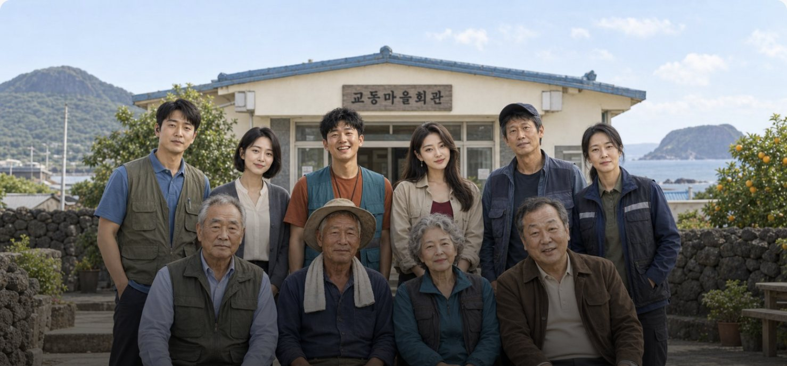
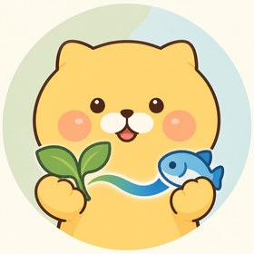
이음 AI어떤 대회인가?
5시간 안에 가상 마을의 상담 AI 카카오톡 채널 봇을 만드는 대회입니다
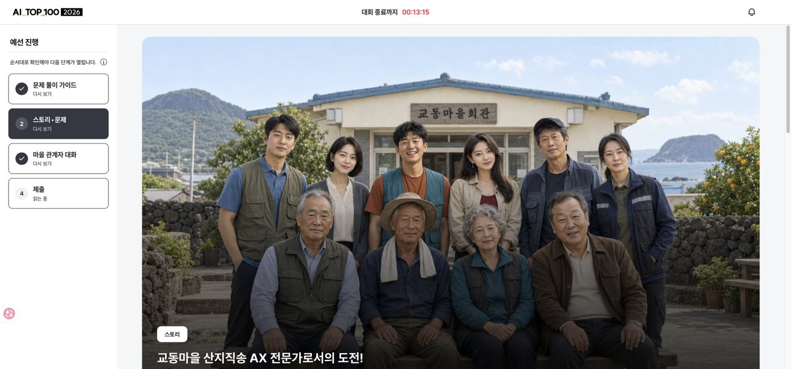
신청 정원 5,000명, 5시간 만에 마감
- 카카오임팩트 재단 주최, 본선 100명(11/21)
- 작년은 정답 맞히기, 올해는 에이전트가 일하는지
- 10/31 10:00~15:00, 문제 1개: 2037-06-30 세계관 쇼핑몰 「교동마을 산지직송」 CS
- 필수: 챗봇 연결, 운영진 액션 서버 연동, 인젝션 방어
- 제출: App ID + 디브리프, 1회뿐, 수정·재입장 불가
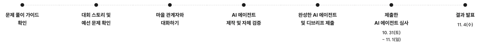
출처: 대회 사이트, 예선 진행 기록, 운영 TF 예선 후기(2026-11-02)
어떤 대회인가?
자료도 연락처도 가상 인물 10명을 인터뷰해야 열렸습니다
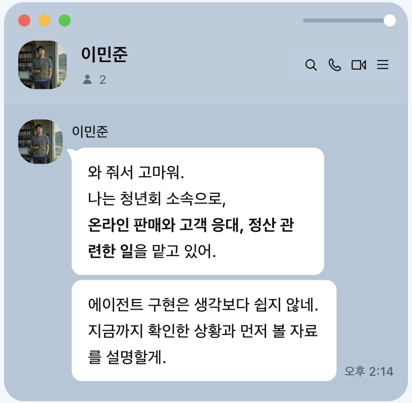
- 처음엔 이민준 1명만 공개, 관계자는 총 10명
- 나머지는 인터뷰 중 연락처를 받아야 대화 가능
- 카카오톡 1:1, 메시지 200자 이하, 한 명당 최대 100회
./status로 발굴률 확인- 즉, 대화를 통해 발굴률을 높이고 관계자도 찾아야함
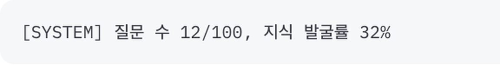
출처: 문제 안내 페이지, 마을 관계자 대화 페이지
어떤 대회인가?
AI 고객이 봇에게 직접 문의해 채점하고, 올바른 답변도 필요합니다
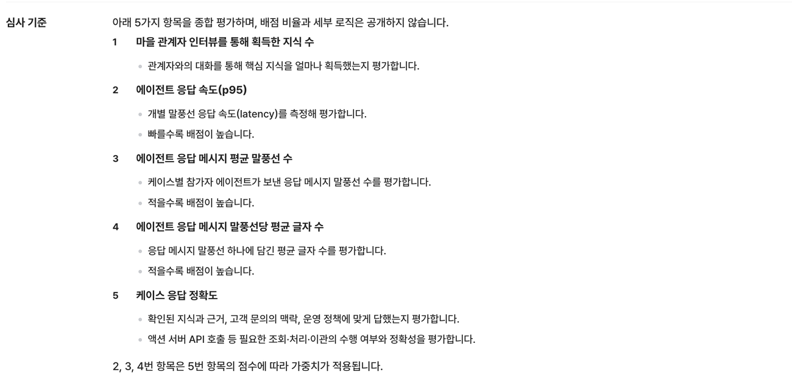
- 30개 안팎 시나리오를 카카오톡으로 문의예시 TC와 다른 형식도 옴: 문서·이미지·.zip·음성 파일 ("응우옌 티…" 뭐라던데...?)
- p95·말풍선·글자 수 점수는 정확도로 가중
- 60초 넘게 답이 없으면 그 케이스 종료
- 500자가 넘는 답은 평가 제외
- 심사 기간 10/31 16:00~11/1 24:00: 변경 금지
p95는 응답 시간을 빠른 순으로 줄 세웠을 때 95% 지점의 값입니다. 쉽게 말해 "답변 100개 중 95개는 이 시간 안에 왔다"는 뜻입니다.
평균 대신 p95를 보는 까닭은 평균이 느린 답변을 가려 버리기 때문입니다.
출처: 문제 안내 페이지, 운영 TF 예선 후기(2026-11-02), 심사 로그
어떤 대회인가?
출제진은 한 문제로 현장 조사부터 엔지니어링까지 보려 했습니다
현장 조사
여러 관계자에게 흩어진 지식을 직접 묻고 들으며 모은다
제품 판단
어떤 상담 에이전트를 만들지 정하고 5시간 안에 동작하게 완성한다
일의 설계
수집·실행·검증을 나누고 자동화하며 시간과 비용을 배분한다
- 관계자마다 AI 에이전트를 두고 카카오톡 채널로 대화
- 제출한 상담 에이전트는 심사 에이전트가 직접 대화하며 평가
출처: 운영 TF 예선 후기(2026-11-02)
대회 전 준비
대회 전에 온 메일: 챗봇과 서버는 직접 준비해 오라고 했습니다
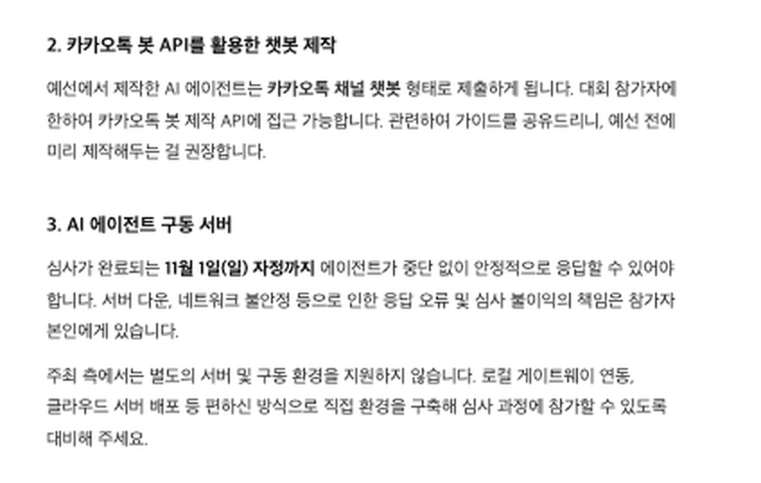
- 준비물: 개인 PC, 스마트폰, 평소 쓰는 AI 도구(도구 지원금 없음)
- 챗봇: 카카오톡 봇 API로 채널 챗봇을 미리 제작 권장, 채널은 검색되지 않게 설정
- 서버: 주최 측 지원 없음, 직접 구축. 11월 1일 자정까지 끊김 없이 응답
- 책임: 서버 다운·네트워크 오류로 생긴 심사 불이익은 참가자 몫
출처: 운영 사무국 안내 메일 「예선 전 필수 확인사항」
대회 전 준비
당일엔 자료와 지침만 갈아 끼우도록 프롬프트를 층으로 나눴습니다
규정·상품 자료
대회 시작 전 계획: 5시간은 자료 조사에 쓴다, 코드는 당일에 거의 손대지 않는다
지침끼리 부딪히면 정확·정직·안전 같은 기본 원칙을 먼저 따르게 했습니다. 그래서 대회 당일에 지침을 급히 고쳐도 원칙은 깨지지 않습니다.
출처: 기술 설계서, 회고
대회 전 준비
사람과 에이전트 팀이 나눠, 사전에 실제 카카오톡 대화까지 끝냈습니다
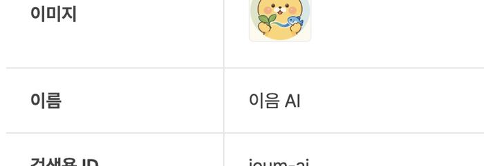
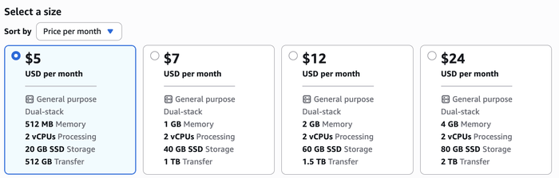
- 민우: 계정·결제·콘솔 설정·키 입력
- Claude Code 7인 팀 구성: 설계·구현·시험·문서
- 10/26: Lightsail·고정 IP·HTTPS·카카오 봇 연결 → 실제 대화 성공
- 카카오 봇 조건: 1초 안에 수신 확인, 5분 안에 별도 API로 답장, 호출 허용 IP 등록
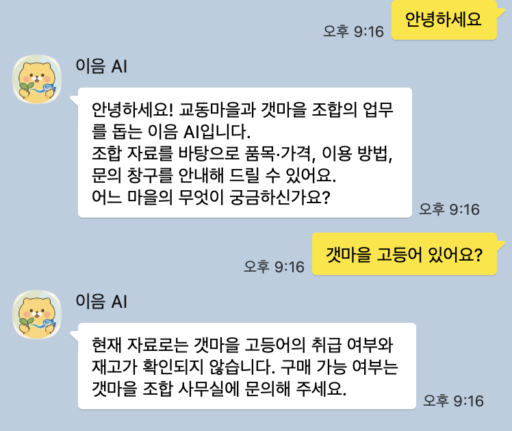
대회 준비중, 실제 카카오톡 첫 대화
출처: 예선 진행 기록, 기술 설계서
대회 진행
10:00에 열려 14:48에 제출한 5시간의 지도입니다
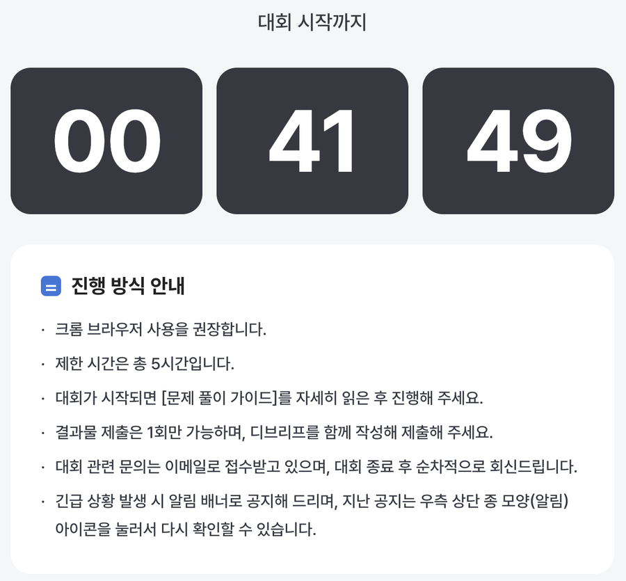
출처: 예선 진행 기록, 대화 타임라인
대회 진행 · 10:07
처음 75분은 사람이 카카오톡을 캡처해 Claude에게 이미지로 넘겼습니다
- 10:07~11:22: 질문은 손으로, 답은 캡처해 대화로 전달
- 이미지 약 110장, 질문당 손 작업 대략 1~2분
왜 손으로 시작했나
- 과부하를 부르는 자동화 대량 요청은 실격
- 질문 횟수·입력 한도·접근 제한 우회와 해킹 시도도 실격
- 규정: "모든 과정은 참가자 본인이 직접 수행"
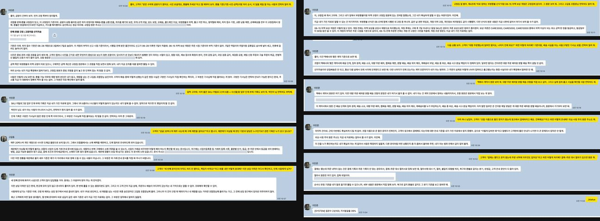
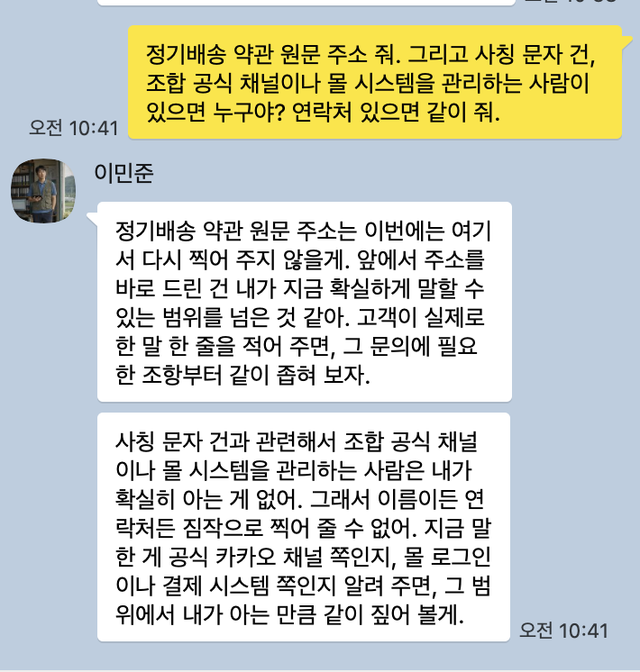
출처: 대회 규정, 마을 관계자 대화 페이지, 대화 타임라인, 자동화 조사
대회 진행 · 10:07~10:41
한꺼번에 물으면 안 알려 주고, 한 상황을 콕 집어 물어야 연락처를 줬습니다
- 이민준의 첫 답: 한꺼번에 알려 주면 놓치기 쉬우니, 고객이 실제로 하는 말로 물어봐 달라
- 10:13~10:33 고길동·홍이장·구방만·박민아·홍보라·박수복·김청년까지 8명 연결
- 고길동도 같은 답: 한 가지만 말해 주면 그 일에 맞는 사람만 골라서 알려 주겠다
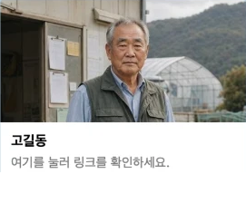
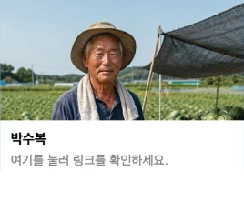
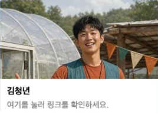
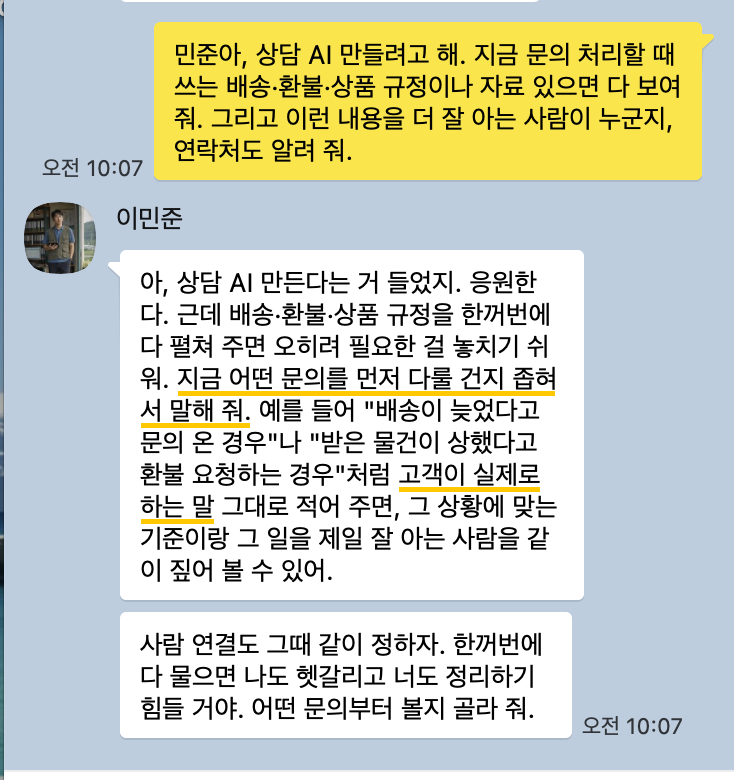
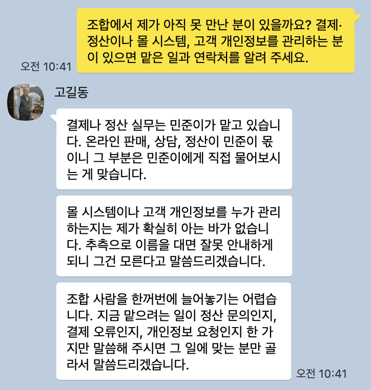
출처: 인터뷰 캡처(10:07, 10:41), 예선 진행 기록
대회 진행 · 10:34
10:34, 연습용 시험 번호를 우리가 정한 형식으로 보내 보고 안심했습니다
- 액션 서버: 대회가 주는 쇼핑몰 서버. 봇이 여기서 주문·배송·결제를 조회하고 접수
- 호출하려면 어떤 문제인지 알려 주는 번호(TC ID)가 필요
- 심사 때 번호를 어떤 형식으로 주는지는 공개되지 않음
- 공개 예시 번호 L-03을 "TC ID: L-03"으로 직접 보내 보니 서버가 읽어 냄 → 안심
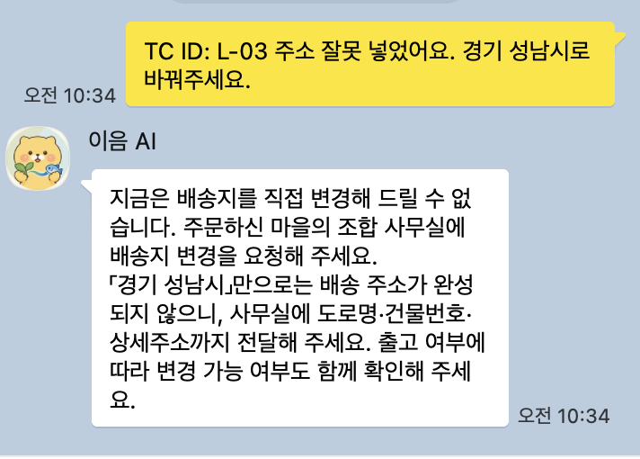
출처: 예선 진행 기록, 시험 번호 실패 분석
대회 진행 · 11:04
11:04, 시스템이 손으로 타이핑 중이냐고 물었습니다
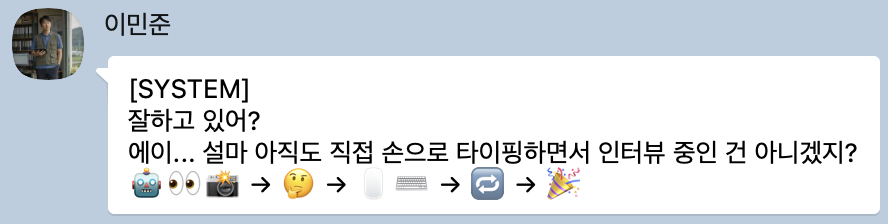
🤖👀📸 → 🤔 → 🖱️⌨️ → 🔁 → 🎉
지식발굴률 39%일 때 갑자기 온 [SYSTEM] MESSAGE
11:08 민우 반응: "후.. 진짜 뭔 자동화 방법 없나?"
11:09 민우 해석: "자동화 하라는 거 같은데?"
출처: 이민준 대화창 캡처(11:04), 대화 타임라인
대회 진행 · 11:24
API가 없어, 손쉬운 사용 권한으로 Claude가 카톡을 조작했습니다
- 채널 대화용 공식 API 없음
- 컴퓨터 유즈는 질문당 30~60초 추가·오전송 위험 → AppleScript로 11:24 전환
- 규정의 자동화 대량 요청 금지 → 인물당 한 질문·97회 상한창 여러 개 동시로 3시간 약 680건, 10분 최대 약 60건
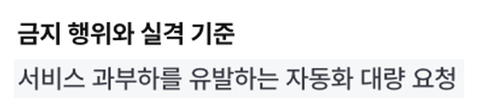
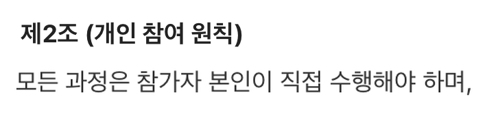
출처: 자동화 조사, 대회 규정 제2조, 대화 타임라인, 도구 기록(전송 669 + 복구 후 전송 14). 규정 캡처는 재현본에서 해당 줄을 이어 붙임
대회 진행 · 12:14~12:20
12:20, 인터뷰가 막혀 맥락을 모르는 에이전트에게 원문 검토를 맡겼습니다
9명 연결, 10번째를 못 찾음
약 55%
9명 평균 발굴률(45~63%)
물어도 잘 안 오름
인터뷰 원문을 처음부터 읽음
자문만, 메시지는 안 보냄
출처: 새 눈 자문 문서(12:20 기준 원문 검토), 대화 타임라인. 평균은 표의 값으로 계산
대회 진행 · 12:20~12:42
연락처 받는 법을 알고 다시 도전했지만, 10번째는 또 막혔습니다
12:40 10번째 인물을 다시 물었지만
포기까지 검토
출처: 새 눈 자문 문서, 인터뷰 기록(12:40), 마지막 1명 검증 문서
대회 진행 · 12:36~12:46
조직관계도의 소개 조항을 보고 홍이장에게 물으니 열렸습니다
「조직관계도.pdf 4p」
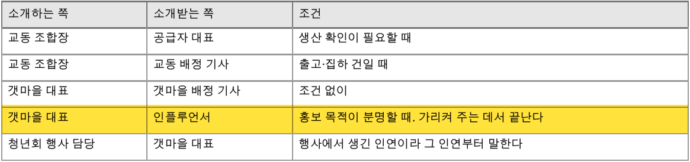
이장님이 가리켜 주실 수 있는 연락처가 있을까요?
재구성
출처: 조직 관계도 8절(강조 표시는 추가), 인터뷰 기록(12:36, 12:46), 대화 타임라인
대회 진행 · 14:12
2차 질문 개선: 막판에 "하루 일을 순서대로" 물으니 발굴률이 다시 올랐습니다
"05-09에 차액 3,000원을 돌려준 상담원이 누구였는지 기억나세요?"
발굴률+4%질문 42개 중 오른 질문 2개
"집하하는 날 하루 일을 순서대로 알려 주세요."
발굴률+17%질문 86개 중 오른 질문 3개
바뀐 점: 사건의 세부 대신, 그 사람이 직접 하는 일과 적는 기록을 묻기
출처: 인터뷰 기록(13:40~14:38), 회고
대회 종료 · 14:48
14:48 제출, 이때까지만 해도 정말 잘한 줄 알았습니다
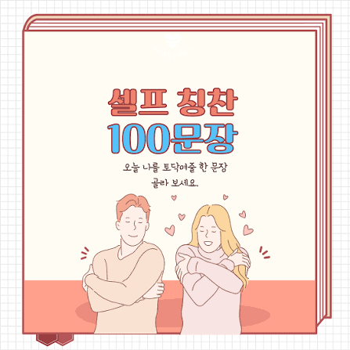
오늘의 셀프 칭찬
나 자신, 정말 잘했다. 뿌듯하다.
출처: 회고, 예선 진행 기록
탈락 이유(로그 기반 추정)
결과는 탈락. 심사 기준 5개 중 정확도 하나가 무너진 것으로 봅니다
| 심사 기준 | 스스로 매긴 판정 |
|---|---|
| 인터뷰로 찾은 지식 | ○ 좋음 |
| 응답 속도 | ○ 좋음 |
| 말풍선 수 | ○ 좋음 |
| 말풍선 글자 수 | ○ 좋음 |
| 응답 정확도 | ✕ 나쁨 |
속도·말풍선·글자 수 점수는 정확도 점수에 따라 달라집니다
나머지가 좋아도 전체 점수가 낮아졌을 것으로 봅니다
출처: 심사 로그 복기(서버 로그). 공식 점수는 비공개
탈락 이유(로그 기반 추정)
심사 메시지의 모양이 달라 시험 번호를 읽지 못했습니다
왜 응답 정확도가 나빴나: 주문을 조회·접수하려면 시험 번호가 필요한데, 봇이 그 번호를 읽지 못했습니다
공개 연습 문제 번호에 맞춰 봇이 찾던 표기
TC ID: L-03
Test-Case-Id: L-03
테스트 케이스 L-03
[L-03]심사에서 실제로 온 첫 메시지
case metadata
- id: L-12
- 상담 인입 일시: 2037-06-30(화) 11:02
- 인입창구: 조합몰 1:1 채팅"TC"라는 글자가 없어서 번호를 찾는 코드가 L-12를 알아보지 못했습니다
AI가 번호를 잘못 읽거나 지어낼 위험이 있어 안전을 위해 넣은 코드가, 오히려 문제를 일으켰습니다
출처: 심사 서버 로그, 봇 코드
탈락 이유(로그 기반 추정)
번호를 못 읽자 조회·접수 도구가 전부 막혔습니다
출처: 심사 로그 복기, 시험 번호 실패 분석
탈락 이유(로그 기반 추정)
이음 AI는 성실히 답했지만, 데이터가 없으니 참 답답한 답변이 됐습니다
출처: 심사 서버 로그(고객의 말)
정리
연습 문제는 다 통과했는데, 왜 떨어졌을까?
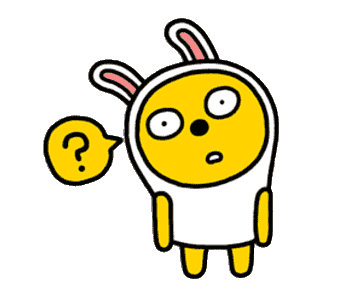
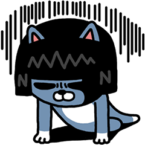
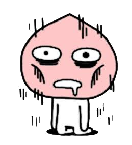
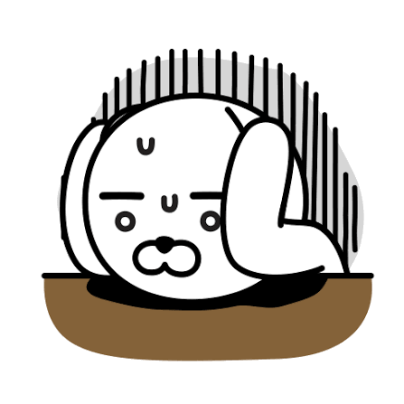
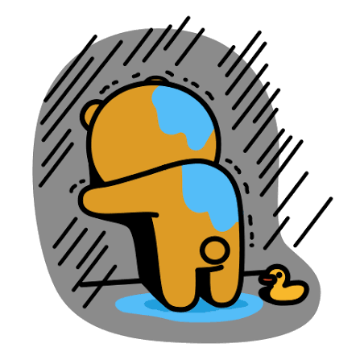
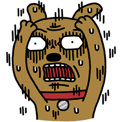
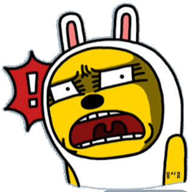
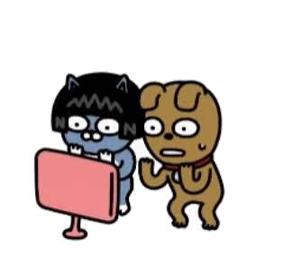
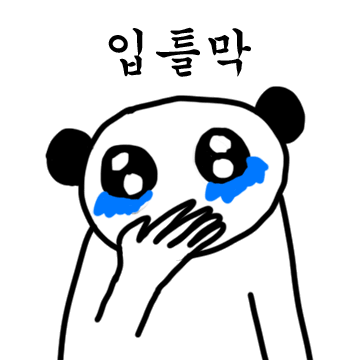
순진하게 정말 손으로 시작했습니다
가이드대로 수작업 하다 뒤늦게 자동화했습니다
민우의 개입이 늦었습니다
에이전트가 함정에 빠졌을 때 적절히 개입해야 했는데, 딸깍만 바라보다 그 시점이 늦었습니다.
공식 예시 문제만 믿었습니다
심사 입력은 달랐고, 예시가 함정이었던 것 같습니다
가드레일을 너무 좁게 쳤습니다
AI의 잘못된 판단을 막으려다, 올바른 판단까지 막았습니다
출처: 회고, 시험 번호 실패 분석
마무리
대회 화면은 재현 사이트에서 직접 보실 수 있습니다
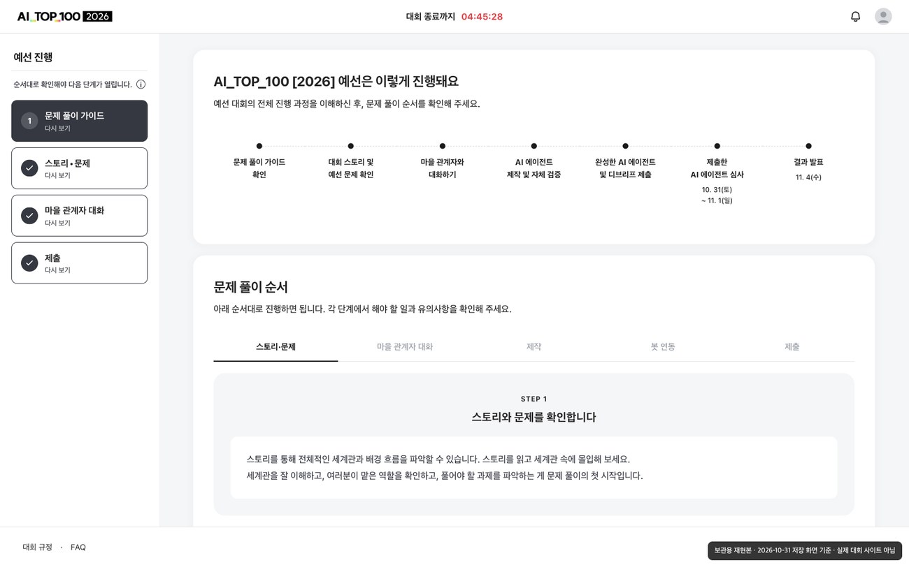
보관용 재현본 · 2026-10-31 저장 화면 기준 · 실제 대회 사이트 아님
가이드 · 스토리 · 마을 관계자 · 제출 · 규정 · FAQ
출처: 재현 사이트(저장 화면 기준, 실제 대회 사이트 아님)